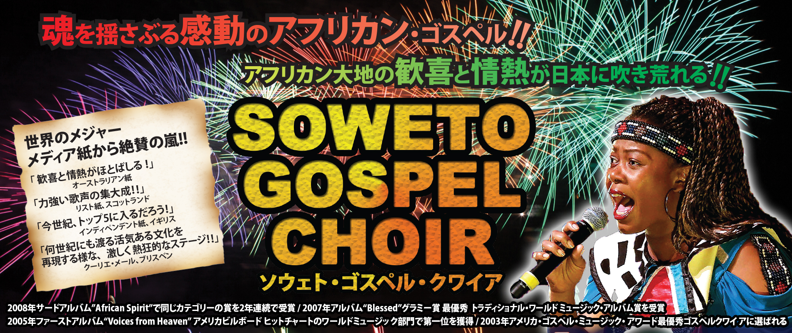
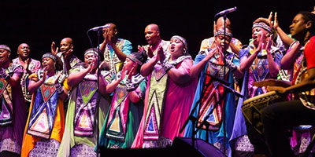
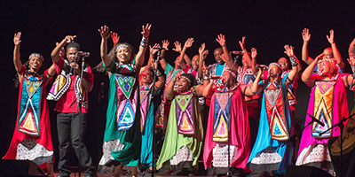

Concert コンサート情報＞Soweto Gospel Choir ソウェト・ゴスペル・クワイア

| ソウェト（SOWETO）とは？ ソウェトとは、South-Western Townships の略で、その名の通りヨハネスブルグ南西にある南アフリカ最大の旧黒人居住区。東京23区程の大きさに200万人と推定される人たちが居住しており、かつてネルソン・マンデラ氏やツツ大司教も住んでいた。1976年に起こったソウェト蜂起は、 後にアパルトヘイト政策を揺るがし終焉させるきっかけとなった。このソウェト蜂起は、イギリスの 名俳優であり名監督のリチャード・アッテンボローによる1987年の映画“Cry for Freedom”（邦題「遠い 夜明け」）や、ブロードウェイのミュージカル「サラ フィナ」（後にウーピー・ゴールドバーグ主演で映画化）の中でも描かれている。 |
||
|  | ソウェト・ゴスペル・クワイアとは？ 2002年、アフリカン・ゴスペル特有の魂を揺さぶるパワーを祝福するために結成。現プロデューサーのRobin Hogarth とBeverly Bryerによって、 南アフリカ共和国のソウェト内外の多くの教会から才能豊かなシンガーたちが選出され、総勢26名のメンバーが属する。David MulovhedziとLucas Bok が音楽監督を務め、Lukas Bok は出演、指揮、ベースの演奏を担当するリーダーとなる。音楽を通して世界中の人たちに信仰の喜びを分かち合うために尽くしていくことをクワイアの使命とする。 |
|
|  | ソウェト・ゴスペル・クワイアの見どころ 著名なクワイア・ディレクターDavid Muloxhedzi の下、エキサイティングで力強いアンサンブルが、 魂と南アフリカへの希望を高らかに歌い上げる！アフリカン・ドラムが奏でる強烈なリズムと大地に鳴り響くハーモニーは、観るものすべてを魅了。伝統的音楽ルーツを持ち、心に響くスピリチュアル・メッセージを観客の心に訴える。まさに魂を揺さぶる大感動のライブ・パフォーマンス!! 伝統的なアフリカン・ゴスペルが「アメイジング・グレイス」「パラダイス・ロード」 そしてオーティス・レディング、ジミー・クリフを代表とするレゲエ・ソングなどをフィーチャー。 まさに今まで体験したことのないアフリカン大地の魂の叫びが響き渡る!! |